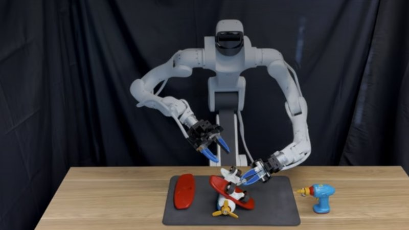

NVIDIAUnited States2026
Cosmos Policy

Full specifications
11 of 14 specifications stated| Field | Value | Source and caveats |
|---|---|---|
| Release | ||
| Released | 22 January 2026 | “[Submitted on 22 Jan 2026]” B |
| Input and output | ||
| Model type | not stated | Note The developer does not label it vision-language-action, world action model or embodied reasoning: “is a 2B-parameter bimanual robot manipulation policy model fine-tuned from the NVIDIA Cosmos-Predict2-2B-Video2World video foundation model.”. A |
| Inputs | Camera Language Robot state | Model card (ALOHA checkpoint): “Input Type(s) : Text + Multi-view Images + Proprioceptive State” A |
| What it controls | Arms and hands | Model card (ALOHA checkpoint): “Action chunk: 50-timestep sequence of 14-dimensional actions (7 per arm: joint positions for 6 joints + 1 gripper)” A |
| Degrees of freedom controlled | not stated | Note Action size for the ALOHA 2 robot with two ViperX 300 S arms: “Action chunk: 50-timestep sequence of 14-dimensional actions (7 per arm: joint positions for 6 joints + 1 gripper)” A |
| Size and speed | ||
| Parameters | 2B | Model card: “2B (inherited from base model)” A |
| Control rate | 25Hz | Rate of the robot's actions (ALOHA checkpoint): “Control frequency: 25 Hz (reduced from original 50 Hz)” A |
| Where it runs and what it is built on | ||
| On robot or cloud | not stated | |
| Base model | NVIDIA Cosmos-Predict2-2B-Video2World | “Base model : NVIDIA Cosmos-Predict2-2B-Video2World” A |
| Openness | ||
| Access | Open weights (download) | Paper abstract: “We release code, models, and training data”. “Hugging Face [01/22/2026] via https://huggingface.co/collections/nvidia/cosmos-policy” B |
| Licence text | NVIDIA One-Way Noncommercial License (NSCLv1) | Model weights: “This model is released under the NVIDIA One-Way Noncommercial License (NSCLv1)”; “Models are not for commercial use.” The code repository carries a separate licence: “Apache License Version 2.0, January 2004”. A |
| Licence | Free, research only | Developer wording: “Models are not for commercial use.” A |
| The developer’s own claims | ||
| Learns new tasks | Needs retraining | Developer wording: “we introduce Cosmos Policy, a simple approach for adapting a large pretrained video model (Cosmos-Predict2) into an effective robot policy through a single stage of post-training on the robot demonstration data collected on the target platform, with no architectural modifications.” B |
| Works across robots | no | Model card for the ALOHA checkpoint: “Trained exclusively for ALOHA 2 robot platform with two ViperX 300 S robot arms” A Yes only if the developer itself says the model runs on different robot models, for example robots from two manufacturers or two of one manufacturer’s models. Several units of the same robot do not count. |
How to read the figuresShow guideHide guide
- Example50HzAThe letter identifies the source of the figure.
Notes
- NVIDIA Research adapts a pretrained video model (Cosmos-Predict2, not Cosmos 3) into a robot policy in a single post-training step; the policy also predicts future states and the value of a state.
- NVIDIA released the code and models on 22 January 2026; there are separate checkpoints for the LIBERO and RoboCasa simulations and for the ALOHA robot.
Notes and variants for the key figures (7)
Model type
Note The developer does not label it vision-language-action, world action model or embodied reasoning: “is a 2B-parameter bimanual robot manipulation policy model fine-tuned from the NVIDIA Cosmos-Predict2-2B-Video2World video foundation model.”.
What it controls
Model card (ALOHA checkpoint): “Action chunk: 50-timestep sequence of 14-dimensional actions (7 per arm: joint positions for 6 joints + 1 gripper)”
Inputs
Model card (ALOHA checkpoint): “Input Type(s) : Text + Multi-view Images + Proprioceptive State”
Access
Paper abstract: “We release code, models, and training data”. “Hugging Face [01/22/2026] via https://huggingface.co/collections/nvidia/cosmos-policy”
Parameters
Model card: “2B (inherited from base model)”
Base model
“Base model : NVIDIA Cosmos-Predict2-2B-Video2World”
Licence
Developer wording: “Models are not for commercial use.”
Sources
-
A
huggingface.
co/ · Retrievednvidia/ Cosmos-Policy-ALOHA-Predict2-2B -
B
arxiv.
org/ · Retrievedabs/ 2601. 16163
One line per source, not per figure: a source has one retrieval date.